พอลิเมอร์และมอนอเมอร์
1) จากมอนอเมอร์สู่พอลิเมอร์From Monomer to Polymer
มอนอเมอร์ (monomer) คือโมเลกุลขนาดเล็กที่สามารถเชื่อมต่อกับมอนอเมอร์อื่นเพื่อสร้างพอลิเมอร์ ส่วน พอลิเมอร์ (polymer) คือโมเลกุลขนาดใหญ่มากที่ประกอบด้วยหน่วยโครงสร้างจำนวนมากเชื่อมต่อกัน
A monomer is a small molecule capable of joining with other monomers to form a polymer. A polymer is a very large molecule made of many connected structural units.
2) Homopolymer vs Copolymerจำแนกจาก “จำนวนชนิด” ของมอนอเมอร์
มอนอเมอร์ชนิดเดียว
One type of monomer
มอนอเมอร์มากกว่า 1 ชนิด
More than one type of monomer
Count monomer types, not the number of monomer molecules.
3) พอลิเมอร์ธรรมชาติและสังเคราะห์Natural vs Synthetic Polymers
Occurs naturally or is produced by living organisms.
ตัวอย่าง: chitin, lignin, glycogen
Manufactured by humans through chemical processes.
ตัวอย่าง: polystyrene, PTFE, PMMA
4) ทำไมสมบัติของพอลิเมอร์จึงต่างจากมอนอเมอร์?Why do polymers have different properties?
Larger molecules
Longer chains
More chain entanglement + stronger intermolecular attractions
ความหนืด ↑ • ทนต่อแรง ↑ • โดยทั่วไปละลายยากขึ้น
Higher viscosity • greater resistance to force • generally lower solubility
5) เปรียบเทียบสมบัติของมอนอเมอร์และพอลิเมอร์Comparing Monomer and Polymer Properties
| สมบัติ / Property | Monomer | Polymer |
|---|---|---|
| ขนาดโมเลกุล / Molecular size | เล็กกว่า / Smaller | ใหญ่กว่ามาก / Much larger |
| จุดหลอมเหลว/พฤติกรรมเมื่อให้ความร้อน Melting point / behaviour on heating | โดยทั่วไปต่ำกว่า / Generally lower | โดยทั่วไปสูงกว่า; พอลิเมอร์หลายชนิดอ่อนตัวเป็นช่วงอุณหภูมิ / Generally higher; many polymers soften over a range |
| การละลายในตัวทำละลาย / Solubility in solvents | โดยทั่วไปละลายง่ายกว่า / Generally more soluble | โดยทั่วไปละลายยากกว่า / Generally less soluble |
| ความหนืดและการทนต่อแรง / Viscosity & resistance | ต่ำกว่า / Lower | สูงกว่า เพราะสายโซ่ยาว พันกัน และมีแรงยึดเหนี่ยวระหว่างโมเลกุลมากขึ้น / Higher due to long-chain entanglement and stronger intermolecular attractions |
6) Monomer ≠ Repeating Unitมอนอเมอร์กับหน่วยซ้ำไม่ใช่คำเดียวกัน
มอนอเมอร์คือสารตั้งต้นก่อนเกิดพอลิเมอร์ ส่วน หน่วยซ้ำ (repeating unit) คือส่วนของโครงสร้างที่เกิดซ้ำตลอดสายพอลิเมอร์ ดังนั้นอย่าตัดสินหน่วยซ้ำด้วยการคัดลอกโครงสร้างมอนอเมอร์โดยตรง
The monomer is the starting molecule; the repeating unit is the structural section repeated along the polymer chain. Do not identify a repeating unit simply by copying the monomer structure.
พอลิเมอร์และมอนอเมอร์
OBJECTIVE
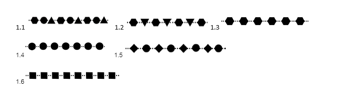
| ข้อ Item | ประเภทของพอลิเมอร์ Polymer type | โครงสร้างมอนอเมอร์ Monomer structure(s) |
|---|---|---|
| 1.1 | โคพอลิเมอร์ Copolymer | |
| 1.2 | โคพอลิเมอร์ Copolymer | |
| 1.3 | โฮโมพอลิเมอร์ Homopolymer | |
| 1.4 | โฮโมพอลิเมอร์ Homopolymer | |
| 1.5 | โฮโมพอลิเมอร์ Homopolymer | |
| 1.6 | โฮโมพอลิเมอร์ Homopolymer |
พอลิเมอร์ธรรมชาติและพอลิเมอร์สังเคราะห์
Naturalสังเคราะห์
Synthetic
Naturalสังเคราะห์
Synthetic
Naturalสังเคราะห์
Synthetic
Naturalสังเคราะห์
Synthetic
Naturalสังเคราะห์
Synthetic
Naturalสังเคราะห์
Synthetic
Naturalสังเคราะห์
Synthetic
Naturalสังเคราะห์
Synthetic
Naturalสังเคราะห์
Synthetic
Naturalสังเคราะห์
Synthetic
Naturalสังเคราะห์
Synthetic
Naturalสังเคราะห์
Synthetic
สมบัติและหน่วยซ้ำของพอลิเมอร์
| สมบัติ Property | มอนอเมอร์ Monomer | พอลิเมอร์ Polymer |
|---|---|---|
| ขนาดโมเลกุลMolecular size | ||
| จุดหลอมเหลวMelting point | ||
| การละลายในตัวทำละลายSolubility in solvents |
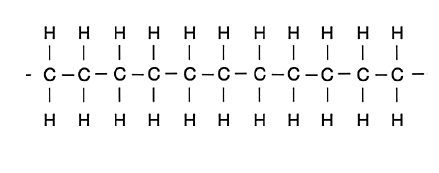
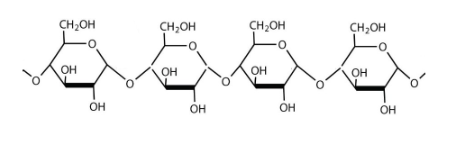
ปฏิกิริยาการเกิดพอลิเมอร์
OBJECTIVE
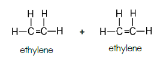
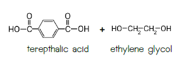
การเขียนผลิตภัณฑ์พอลิเมอร์
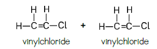
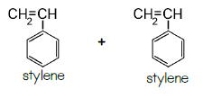
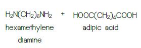
การเขียนผลิตภัณฑ์พอลิเมอร์
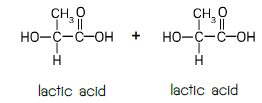
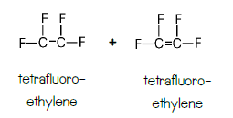
วิเคราะห์มอนอเมอร์จากโครงสร้างพอลิเมอร์
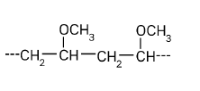
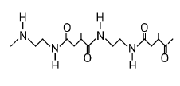
วิเคราะห์มอนอเมอร์จากโครงสร้างพอลิเมอร์
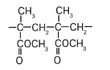
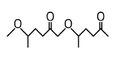
โครงสร้างและสมบัติของพอลิเมอร์
OBJECTIVE
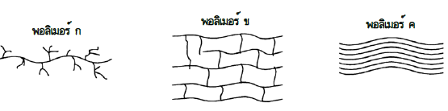
พอลิเมอร์ในบรรจุภัณฑ์และภาชนะ
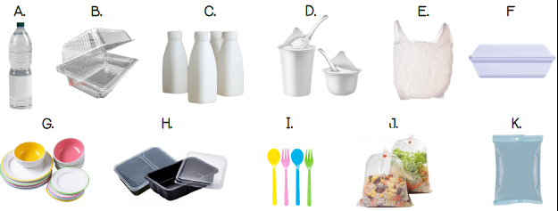
การปรับปรุงสมบัติของพอลิเมอร์
OBJECTIVE
สารเติมแต่งและโคพอลิเมอร์
การเชื่อมขวางและชนิดโคพอลิเมอร์
Editorial correction: PVC in the source was changed to polybutadiene because sulfur vulcanisation requires unsaturated rubber sites.
พอลิเมอร์นำไฟฟ้า
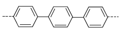
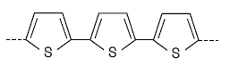
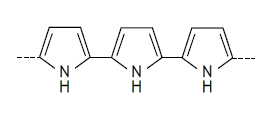
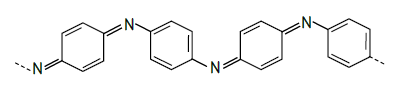
เรโซแนนซ์และการนำไฟฟ้า
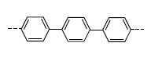
การแก้ปัญหาขยะจากพอลิเมอร์
OBJECTIVE
รหัสชนิดพลาสติก
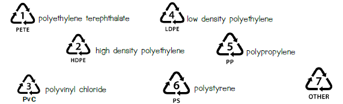
Reduce - Reuse - Recycle
| กิจกรรม / Action | ลดการใช้ Reduce | ใช้ซ้ำ Reuse | รีไซเคิล Recycle |
|---|---|---|---|
| 1. ใช้ถุงพลาสติกจากร้านสะดวกซื้อไปใส่ขยะUse a convenience-store bag as a garbage bag. | |||
| 2. ใช้ถุงผ้าแทนถุงพลาสติกUse a cloth bag instead of a plastic bag. | |||
| 3. นำพลาสติกจากขวดไปทำเส้นใยสำหรับเสื้อกันหนาวหรือพรมProcess bottle plastic into fibres for jackets or carpets. | |||
| 4. ไม่รับถุงพลาสติกDecline a plastic bag. | |||
| 5. แปรรูปถุงพลาสติกเป็นถุงดำใส่ขยะReprocess plastic bags into black garbage bags. | |||
| 6. ใช้แก้วน้ำหรือภาชนะอาหารที่นำมาเองUse a personal cup or food container. | |||
| 7. นำยางรถยนต์มาทำกระถางต้นไม้หรือรองเท้าแตะTurn used tyres into plant pots or sandals. | |||
| 8. ใช้แก้วน้ำหรือขวดน้ำซ้ำReuse a cup or water bottle. |